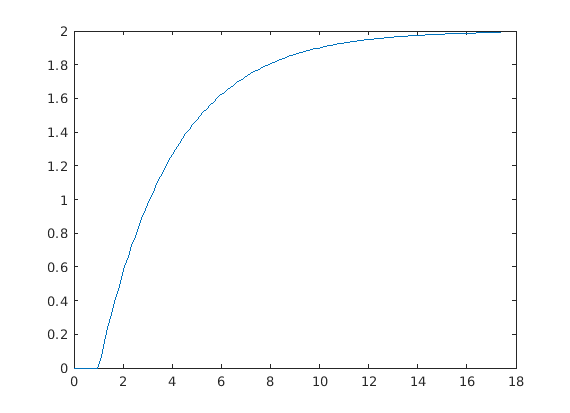

Contents
Clearing Environment
close all
clear;
clc;
Handles Paths
Get current file path
file_name = matlab.desktop.editor.getActiveFilename; file_path_arr = strsplit(file_name,filesep);
Get project folder
Dynamically obtain process modelling folder
project_folder = ''; for i = 2:length(file_path_arr)-3 project_folder = strcat(project_folder,filesep); project_folder = strcat(project_folder,file_path_arr(i)); end project_folder = project_folder{1}
project_folder =
'/home/tan/MATLAB/projects/Modelling&Control'
Add step_resp based method folder
step_response_folder = strcat(project_folder,filesep,'Process Modelling',filesep,'Modelling Techniques',filesep,'Step_resp_based') addpath(step_response_folder)
step_response_folder =
'/home/tan/MATLAB/projects/Modelling&Control/Process Modelling/Modelling Techniques/Step_resp_based'
Add tools folder
tools_folder = strcat(project_folder,filesep,'Tools')
addpath(tools_folder)
tools_folder =
'/home/tan/MATLAB/projects/Modelling&Control/Tools'
Create sample FOPTD system
Define system as TODO: Add equation into documentation
sample_system = FOPTD_system(2,3,1)
sample_system =
FOPTD_system with properties:
params: [1×1 struct]
tf: [1×1 tf]
Get step response of sample system
[sample_step.data,sample_step.time] = step(sample_system.tf);
plot(sample_step.time,sample_step.data)
% TODO: Add title and scale
 Testing Methods
TPM_model = two_point_method(sample_step,2,0.1,0.9);
log_model = log_method(sample_step,2);
LSTD_model = LSTD(sample_step,10);
area_model = area_method(sample_step,2);
Modelling_methods = {'Actual';'Two-point method';'log Method';'Area method';'Least Squares Time Domain Method'};
Models = [sample_system.params,TPM_model.params,log_model.params,area_model.params,LSTD_model.params];
T = table(Modelling_methods,[Models.K].',[Models.tau].',[Models.L].')
T =
5×4 table
Modelling_methods Var2 Var3 Var4
____________________________________ ____ ______ _______
{'Actual' } 2 3 1
{'Two-point method' } 2 3 1
{'log Method' } 2 3.0324 0.88402
{'Area method' } 2 3.0118 0.99467
{'Least Squares Time Domain Method'} 2 3.0005 0.99943